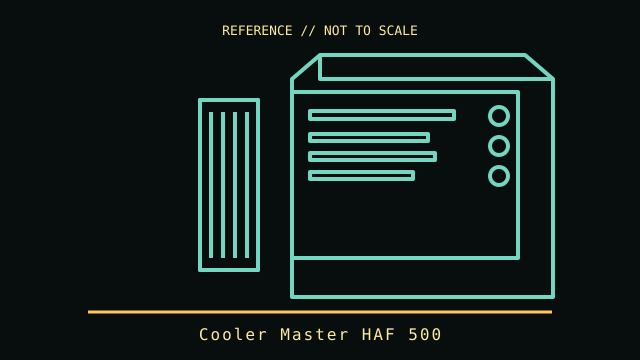

[ TOWER AND LEGACY DESKTOP CASES // IDENTIFIED ENCLOSURE ]
Cooler Master HAF 500
2022 high-airflow mid-tower. A model-specific enclosure record with physical fit limits, revision notes and manufacturer references.

IDENTIFICATION: Confirm the chassis label, model suffix, revision and regional bundle. Manufacturer maximum clearances are conditional on fan, radiator, drive-cage and cable configurations; allow room for connectors and service access.
Recorded specifications
| Cataloged model | Cooler Master HAF 500 |
|---|---|
| Era / class | 2022 high-airflow mid-tower |
| Dimensions and component limits | ATX-family motherboard support; up to 410 mm graphics-card length and 167 mm CPU-cooler height (manufacturer maximums). Dual 200 mm ARGB front fans; front/top radiator support is layout-dependent. |
| Revision / variant identification | Large front fans and a mesh intake distinguish the HAF 500 from other HAF family models; front radiator thickness changes available GPU space. |
Compatibility and fit notes
Check the exact HAF 500 revision and front-radiator/fan stack before fitting a long GPU. The dual 200 mm intake units are unusually large; confirm fan-header and ARGB-controller connections. A standard ATX PSU and ATX/microATX/Mini-ITX board are the intended class; do not treat the HAF 500 as the similarly named H500-series cases.
- Measure the exact GPU, CPU cooler, PSU, radiator and fan stack; nominal maximums may not be simultaneously usable.
- Check motherboard standoff locations, front-panel connectors, PSU cable routing, drive cages and expansion-slot alignment before assembly.
- Consult the applicable manual for screw locations, removable brackets, included hardware and fan/ARGB pinouts; do not force panels or boards into place.
Model-specific notes
Large front fans and a mesh intake distinguish the HAF 500 from other HAF family models; front radiator thickness changes available GPU space.
Sources & further reading
- Cooler Master — HAF 500 product specificationsManufacturer product page; verify regional SKU and manual for final component clearances.
- Cooler Master HAF 500 manual (ManualsLib mirror)User-manual mirror for setup and configuration; manufacturer product page is the primary specification reference.
Specifications describe the identified model family; validate the exact part number, revision and regional package against the manufacturer's manual before purchase or installation.